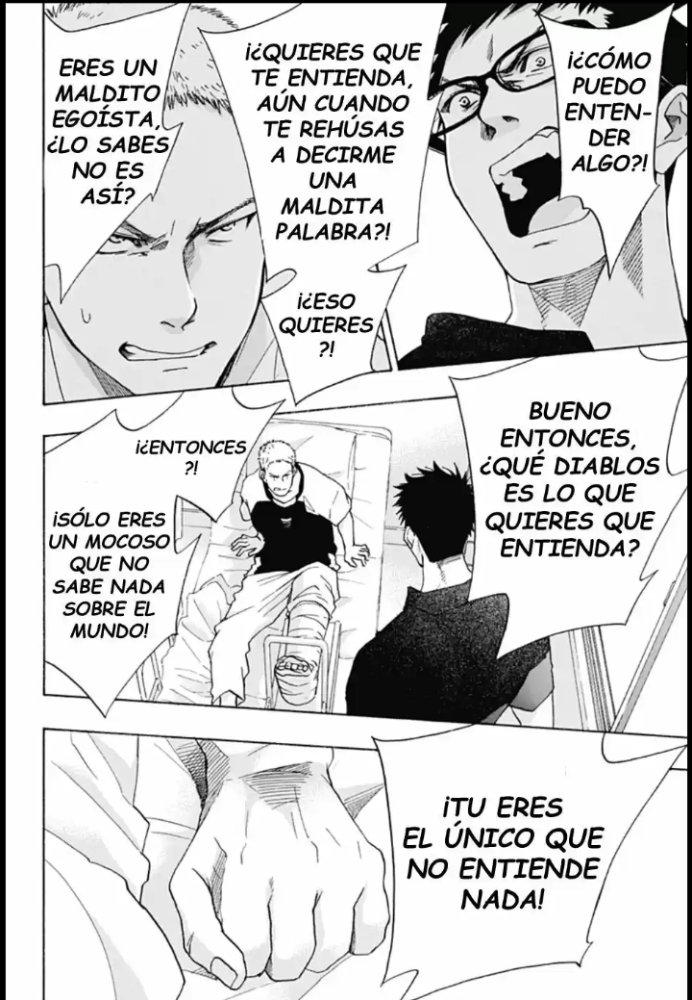

Seiya, el hermano de Toma, le pide a Taichi que le pregunte a Toma que es lo que quiere hacer de verdad con su futuro. Pero el no sabe como sacarle el tema, y llega el día en que le dan el alta a Toma… Por otro lado, Futaba se entera de que se acerca el cumpleaños de Taichi y propone que ese día vayan a ver los fuegos artificiales y celebrarlo los cuatro juntos.
